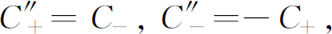

在上一章中，我们用自旋1的体系作为例子，将量子力学的普遍原理概括如下：
任何状态ψ 都可用这个状态在一组基础态的各个态中的振幅来描述。
一般说来，从任意一个状态过渡到另一个状态的振幅可写成许多乘积的总和，每一个乘积为从初态进入某一基础态的振幅乘以从该基础态到终态的振幅，最后每个基础态的项求和：
基础态是相互正交的——一个基础态的振幅在另一个基础态中等于零：
从一个状态过渡到另一个状态的振幅等于其逆过程的振幅的复共轭：
我们还讨论了一下状态可以有不止一个基这一事实，而且我们可以用式（6.1）从一个基变换到另一个基。例如，假定在基础体系S 的第i 基础态中找到状态ψ 的振幅是〈iS |ψ 〉，但是后来我们决定宁愿用另一组基础态，譬如说用属于基础体系T 的状态j 来表示ψ 这个状态。在一般公式（6.1）中，我们用jT 代替χ ，从而得到下面的公式：
状态ψ 在基础态（jT ）中的振幅通过一组系数〈jT |iS 〉和ψ 在基础态（iS ）中的振幅相联系。如果有N 个基础态，那么就有N 2 个这样的系数。这一组系数常常被称为“从S 表象到T 表象的变换矩阵 ”。这看上去在数学上是很棘手的，但是只要稍微改变一下名称，我们就可以看到它实际上并非如此之难。如果我们令Ci 为状态ψ 在基础态iS 中的振幅——即 ——并令 是对于基础体系T 的相应的振幅——即 ，于是式（6.4）可以写成：
式中Rji 就是〈jT |iS 〉。每一个振幅 等于振幅Ci 乘以对应的系数Rji 后对所有i 求和。这和矢量从一个坐标系到另一坐标系的变换有同样的形式。
为了避免过分抽象，我们曾对自旋1的情况举过若干个这些系数的例子，使你们能领会在实际情况中怎样应用它们。在另一方面，量子力学中有一件极其美妙的事——从存在着3个状态这一纯粹的事实以及转动的空间对称性出发，这些系数可以用纯粹抽象推理来推出。在此初期阶段就给你们讲解这样的论证有其不利之处，在我们“脚踏实地”之前，你们又陷入了另一个抽象问题之中。然而，这是如此之美妙，不管怎样我们还是谈一谈吧。
在本章里，我们将向你们说明，对于自旋1/2的粒子，怎样求出它的变换系数。我们选择自旋1/2的情况而不选择自旋1的情况是由于前者比较容易。我们的问题是，对于施特恩-格拉赫装置中分裂为两束的粒子——原子体系——确定它的系数Rji 。我们要用纯粹的推理——加上一些假设——推导出从一个表象到另一个表象的所有变换系数。为了进行“纯粹的”推理，作一些 假设常常是必要的！虽然这个论证是抽象的，而且比较复杂，但是所得到的结果叙述起来却比较简单并且容易理解——而结果是最重要的事情。如果你们愿意，可以把这当作一种文化游览。实际上我们是这样安排的，凡是在这一章里得到的重要结果在以后的几章中如果需要的话会用另外的方法导出。所以你们不必担心如果把这一章完全略去或留到以后某个时刻再来学习，会使你们学习量子力学时乱了头绪。我们是在这个意义上说这是“文化的”游览：即试图表明量子力学原理不仅有趣，而且如此深刻，只要再加上关于空间结构的少数几个假设，我们就能导出物理体系的许许多多性质。知道量子力学的不同结论来自何处也是重要的，因为只要我们的物理定律还是不完全的——正如我们知道它们确是如此——弄清理论和实验不一致的那些地方到底是我们的逻辑最好之处还是最糟之处，是很有趣的。直到现在为止，看来我们的逻辑最抽象的地方却总是给出正确的结果——它和实验一致。只有当我们试图提出基本粒子内部机理和它们相互作用的特殊模型时，我们才不能找到和实验符合的理论。下面要讲的理论无论在什么地方受到检验时，都和实验符合——对于奇异粒子以及对于电子、质子等等都如此。
在我们继续讲下去之前，先谈一个令人烦恼但却很有趣的问题：不可能唯一地确定系数Rji ，因为概率振幅始终具有某种任意性。假定你们有一组任何种类的振幅，譬如说是通过所有不同的路径到达某一地点的振幅，如果在每一个振幅上乘以同样的相位因子——例如eiδ ——你们就得到另一组和原来的一组同样好的振幅。所以对于任何给定的问题中，如果你愿意的话，可以任意改变所有振幅的相位。
假定你们写下多个振幅之和，譬如说是（A ＋B ＋C ＋…），并取其绝对值的平方以计算某个概率。可是另外的某一个人应用振幅之和（A′ ＋B′ ＋C′ ＋…）并取其绝对值的平方以计算同一事物的概率。如果除了因子eiδ 之外，所有各个A′ 、B′ 、C′ …与A 、B 、C …都各各相等，那么两者取绝对值平方所得出的概率将完全相等，因为此时（A ＋B ＋C ＋…）等于eiδ （A ′＋B ′＋C ′＋…）。例如，假定我们要用式（6.1）计算某个东西，但是，我们突然改变了某个基础体系的所有相位。每一个振幅〈i |ψ 〉都要乘以同样的因子eiδ 。同样，振幅〈i |χ 〉也要改变eiδ ，但是振幅〈χ |i 〉是振幅〈i |χ 〉的共轭复数，所以，〈χ |i 〉改变因子e－iδ 。指数上正的和负的iδ 相消，于是我们就得到和以前同样的表式。所以这是一个普通的规则。如果对于一个给定基础体系，我们使所有的振幅改变同一个相位——或者甚至在任意问题中我们改变所有振幅的相位——这不会影响结果。所以在我们的变换矩阵中有着某种选择相位的自由。我们常常要作这种任意的选择——通常按照通用的惯例来作出选择。
我们再来考虑上一章曾描写过的“改进的”施特恩-格拉赫装置。一束自旋1/2粒子从左边进入装置，一般说来它会分裂成两束，如图6-1所示。（对于自旋1就有三束。）和以前一样，两束粒子会重新会聚，除非其中一束被插在中间的“挡板”挡住。在图上我们画一个箭头，它表示磁场大小 的增加方向——就是说指向有尖端的磁极。我们用这个箭头来表示任一特定装置的“向上”坐标轴 。它相对于装置是固定的，当我们同时使用几台装置时，可以用这个箭头表示各装置的相对取向。我们还假设每一个磁铁中的磁场方向总是与此箭头一致。
图6-1 有自旋1/2粒子束通过“改进的”施特恩-格拉赫仪器的俯视图和侧视图
我们说：在“上”射束中的原子是处于对该装置而言的 （＋）的状态中，在“下”射束中的原子是处于（－）的状态中。（对于自旋1/2粒子没有“零”状态。）
现在我们把两台改进的施特恩-格拉赫装置串接起来，如图6-2（a）所示。第一台装置称为S ，我们可以用挡住其中的这一束或那一束射束的方法来制备纯粹的（＋S ）或纯粹的（－S ）状态，［图上所示为制备纯粹的（＋S ）态。］对于每一种情况，从S 出射的粒子都有一定的振幅进入第二台装置中的（＋T ）射束或（－T ）射束。实际上，一共只有4个振幅：从（＋S ）到（＋T ），（＋S ）到（－T ），（－S ）到（＋T ），以及（－S ）到（－T ）的振幅。这些振幅就是从S 表象到T 表象的变换矩阵Rji 的4个系数。我们可以认为：第一台装置“制备”在某一个表象中的特定状态，而第二台装置按照第二个表象来“分析”上面得到的状态。于是，我们要解答的问题是：假定处于给定状态——譬如说（＋S ）态——的原子是用挡住S 装置中某一射束的方法制备的，那么该原子通过调节成（譬如说）（－T ）态的第二个装置T 的机会是多少？当然，其结果依赖于S 和T 这两个系统间的角度。
我们应当解释一下：为什么我们能够希望用演绎法来求出系数Rji 。你们知道很难相信如果一个粒子原来的自旋沿＋z 方向排列，以后会有可能发现其自旋指向＋x 方向——或者另一个完全任意的方向。实际上，这虽然是几乎不可能的，但并不是绝对不可能。它几乎不可能，所以只有一种方法 可使上述情况发生，这就是我们可以找到这唯一的方法的理由。
我们可以作出的第一个论证是：假定我们建立了如图6-2（a）中的那样一套设备，其中有两台装置S 和T ，T 对于S 向上翘起一个角度α ，我们只让S 通过（＋）射束，而让T 通过（－）射束。我们将观察到从S 出来的粒子并通过T 的概率有一定的数值。现在假定我们用图6-2（b）的装置进行另一次测量。S 和T 的相对 取向不变，但整个系统放在空间另一个角度的位置上，我们要假设 ，关于对处于S 的一个纯粹状态中的粒子进入T 的某一特定状态的概率，这两个实验都会给出同样的数值。换言之，我们假设这种类型的任何实验的结果都是相同的——物理规律 是相同的——无论整套 装置在空间中如何取向。（你们会说：“这是显而易见的。”不，它是 一个假设，只当它符合实际情况时才能认为它是“正确的”。）这意味着系数Rji 只依赖于S 和T 在空间的相互关系而不依赖于S 和T 在空间的绝对位置。换一种说法，Rji 只依赖于将S 至T 的转动 ，因为图6-2（a）和6-2（b）的相同之处显然是将装置S 转到装置T 的三维转动，当变换矩阵Rji 只依赖于转动时，这里的情形就是如此，它被称作转动矩阵 。
图6-2 两个等效的实验
为下一步的讨论，我们还需要一点资料。假定我们加上第三台装置，我们称它为U ，它以任意的角度接在T 的后面，如图6-3（a）。（初看起来这很讨厌，但这正是抽象思维有趣之处——你们只要用划线的办法就可进行最不可思议的实验！）现在要问，S →T →U 的变换是什么？我们实际上要做的是，当我们已知从S 到T 和从T 到U 的变换的前提下，求出从S 的某一个状态到U 某一个状态的振幅。我们接着要讨论的是T 的两个通道都打开的实验，我们可连续两次运用式（6.5）来求出答案。从S 表象到T 表象，我们有：
图6-3 如果T “敞开”，（b）和（a）等效
式中，我们在R 上加上上标TS 是为了和T 到U 的系数RUT 相区别。
假设处于U 表象中基础态的振幅为 ，我们可再一次运用式（6.5）把它和T 振幅联系起来；我们得到：
将式（6.6）和式（6.7）结合起来，就得到直接从S 到U 的变换。把式（6.6）的 代入式（6.7），我们得到：
由于i 在 中不出现，我们可把对i 的求和符号也放到前面来，并把上式写成：
这就是双重变换的公式。
可是，注意，只要所有T 中的射束都没有被挡住，从T 出射的粒子的状态和进入T 时的状态是相同的。我们就可以直接从S 表象变换到U 表象。这应和直接把装置U 接在S 后面是一样的，如图6-3（b）。在这个情况下，我们可以写出：
式中 就是这一变换的系数。显然，式（6.9）和（6.10）应该给出同一个振幅 ，并且不管给我们振幅Ci 的初态φ 是什么，这个结果都应该正确，所以，下式必定成立：
换言之，如果参考基的S →U 任意转动可以看作由连续两次相继的转动S →T 和T →U 组成，转动矩阵 可以按照式（6.11）由两次部分转动的矩阵求得。如果你们愿意，你们可以直接从式（6.1）求出式（6.11），因为它只是 的不同记法而已。
为透彻起见，我们应加上下面的附注。不过，它们并非是十分重要的，如果你们不愿意看的话可以略去它直接阅读下一节。我们上面所讲的东西不是十分正确的。我们确实不能说式（6.9）和式（6.10）必须给出严格 相同的振幅。只是在物理 意义上应该相同；所有的振幅可以相差某个共同的相位因子eiδ 而并不改变关于真实世界的任何计算结果。所以，代替式（6.11），我们真正能够说的是：
其中δ 是某个 实常数。当然，这个额外的因子eiδ 的意义是：如果我们采用矩阵RUS ，由此求得的所有振幅与从两次转动RUT 和RTS 所得到的振幅都可以相差同样的相位因子e－iδ 。我们知道如果所有的振幅都改变同样的相位是无关紧要的，所以只要我们愿意，完全可以忽略这个相位因子。然而，可以证明，假如我们用特定的方法来定义转动矩阵，这个额外的相位因子就永远不会出现——式（6.12）中的δ 永远等于零。虽然这对于我们以后的论证并不重要，但我们可以用关于行列式的数学定理来简短地证明一下。［如果你们对行列式知道得不多，可以不必为此证明烦恼而可以直接跳到式（6.15）的定义。］
第一，我们应该指出，式（6.11）是两个矩阵的“乘积”的数学定义。（说成“RUS 是RUT 和RTS 的乘积”可能更简便一些。）第二，有一个数学定理——对于这里的两行两列矩阵你们自己能够很容易证明它——这个定理说：两个矩阵的“乘积”的行列式等于它们的行列式的乘积。把这个定理应用于式（6.12），我们得到
（我们省略了下标，因为它们并不告诉我们任何有用的东西。）是的，2δ 是正确的。要记住我们所处理的是两行两列的矩阵；矩阵 中的每一项都乘上eiδ ，所以行列式中的每一个乘积——它有两个因子——都要乘上ei2δ 。现在取式（6.13）的平方根，并用它来除式（6.12），我们得到
额外的相位因子不见了。
现在已清楚，假如我们要使任意给定的表象中的所有振幅都归一化（你们还记得，归一化的意思是 ），转动矩阵就都有像eiα 的纯粹虚数指数的行列式。（我们不去证明它，你们将会看到，它们都是这样的。）所以，只要我们愿意，我们可以这样来进行选择，使DetR ＝1，我们的转动矩阵R 就具有唯一的相位。具体的做法是这样的，假设我们以某种任意的方式求出了转动矩阵R ，作为一条规则，我们通过定义：
把R “变换”到“标准形式”。因为我们可在R 的每一项上乘以相同的相位因子以得到我们所要的相位，所以我们可以做到这一要求。下面我们总是假定我们的矩阵已经变换成“标准形式”，于是我们可以运用式（6.11）而不需要有任何额外的相位因子。
我们现在准备找出两个不同表象之间的变换矩阵。有了合成转动的法则以及空间没有特殊方向的假设，我们就有了求出任意转动矩阵的钥匙。解答只有一个 ，我们从对应于绕z 轴转动的变换开始。假设两台装置S 和T ，串联安放在一直线上，它们的轴平行，从图指向外，如图6-4（a）所示。我们取此方向为“z 轴”。确实，若射束的路径在S 装置中向“上”（向着＋z ）偏移，那么在T 装置中也将如此。同样，如果射束在S 装置中向下偏移，它在T 装置也将向下。假定T 装置被放在另一个角度上，但其轴仍旧平行于S 的轴，如图6-4（b）。根据直觉你们会说在S 中的（＋）射束到达T 中仍旧是（＋）射束，因为S 和T 的磁场和磁场梯度仍旧在同样的物理方向上。这是十分正确的。同样S 中的（－）射束在T 中仍旧是（－）射束。对于T 在S 的xy 平面中的任意取向都可得出同样的结果。关于 以及 之间的关系，上面的结论可以告诉我们些什么呢？你们也许会得出这样的结论：绕“参考系”z 轴的任意转动使射束“向上”或“向下”偏移的基础态的振幅仍和先前一样。我们可以写出： ——但这是不正确的 。我们所能 作出的结论只是：经过这样的转动之后，在S 装置中和T 装置中处于“向上”射束的概率相同，即：
我们不能认为，对于图6-4（a）和（b）中T 装置的两个不同取向，有关T 装置的振幅的相位 不会不同。
图6-4的（a）和（b）中的两个装置实际上是不一样的，我们可以由下述方法看出这一点。假定我们把一台产生纯粹（＋x ）态的装置放在S 的前面。（x 轴指向图的下端。）这些粒子在S 中会分裂成（＋z ）和（－z ）射束，但是这两束射束在S 的出口P 1 处重新结合得到（＋x ）态。在T 中又发生同样的过程。假如在T 后面接着放上第三台装置U ，它的轴沿着（＋x ）方向，如图6-5（a）所示，所有的粒子都将进入U 的（＋）射束中。现在把T 和U 一起 转过90°到达图6-5（b）所示的位置，设想一下将会发生些什么。同样，从T 仪器出射的状态就是进入T 仪器的状态，所以进入U 的粒子是处在对于S 为（＋x ）的状态。但是现在的U 是相对于S 为（＋y ）状态分析的，这是不同的状态。（根据对称性，我们将预期只有一半粒子通过。）
图6-4 绕z 轴转动90°
图6-5 处于（＋x ）态的粒子在（a）和（b）中有不同的行为
什么因素变了呢？装置T
和U
仍处在相同的相对物理
关系中。仅仅是因为T
和U
处在另一个不同的方向上就能使物理规律
改变吗？我们原来的假设是物理规律不应改变。答案只能是这样，对于T
的振幅
在图6-5的两种情况下是不同的——所以在图6-4的两种情况下也是不同的。粒子必定有某种方法知道它在P
1
点拐了一个弯。怎么会知道呢？我们已确定的是 和C＋
的大小
在这两种情况中是相同的，但是它们可能——事实上，必定
——具有不同的相位
。我们得出结论，
和C
＋
必定由下列关系联系起来：
和C＋
的大小
在这两种情况中是相同的，但是它们可能——事实上，必定
——具有不同的相位
。我们得出结论，
和C
＋
必定由下列关系联系起来：
必定由下列关系联系起来：
其中λ 和μ 是实数，它们必定以某种方式与S 和T 之间的角度相联系。
目前我们关于λ 和μ 可以说的仅仅是它们一定不相等。［除了图6-5（a）所表示的特殊情况，这时T 和S 有相同的取向。］我们曾看到，所有的振幅同时改变相同的相位时不会有什么物理后果。由于同一理由，我们总可以在λ 和μ 上加上同样的任意数值而不改变任何东西。所以我们可以这样选择 λ 和μ ，使其分别等于某一数的正负值，即我们总可以取：
于是
所以为了方便 (2) ，我们取μ ＝－λ 。于是我们得到参考装置绕z 轴转动某一角度的普遍法则，其变换是
振幅的绝对值不变，只是相位不同。这些相位因子造成了图6-5中两个实验的不同结果。
现在我们想要知道联系λ
与S
和T
之间角度的定律。我们已经知道一种特殊情况的答案。如果角度为零，则λ
也为零。现在我们假设
，当S
和T
之间的角度φ
（见图6-4）趋近于零时，相移λ
是φ
的连续函数——这仅仅看上去是合理的。换言之，如果将T
从通过S
的直线转过很小的角度 ，这时λ
也是一个很小的数量，譬如说等于
，m
是某一个数，因为我们可以证明λ
必正比于
，这时λ
也是一个很小的数量，譬如说等于
，m
是某一个数，因为我们可以证明λ
必正比于 ，所以我们可以这样写。假定我们在T
后面放上另一台装置T′
，它和T
成角度
，所以我们可以这样写。假定我们在T
后面放上另一台装置T′
，它和T
成角度 ，因而就和S
成角度
，因而就和S
成角度 。于是对于T
，我们得到：
。于是对于T
，我们得到：
对于T′ ，我们有：
但是我们知道，如果我们把T′ 直接接在S 后面，我们应当得到同样的结果。这样，如果角度加倍相位也要加倍。显然我们可以把这一论证推广，并且完全可以通过一系列无限小的转动以构成任意的转动。我们得到结论：对于任意 的角度φ ，λ 正比于转过的角度。因此我们可以写下λ ＝mφ 。
于是，我们得到的一般结果是：当T 绕z 轴相对于S 转过角度φ 时，
对于角度φ 以及我们以后将要讲到的所有转动，我们采用标准的约定：正的 转动是对于参考轴正方向的右手 旋转，正的φ 表示向正z 方向前进的右手螺旋的转动。
我们现在要求出m 应当等于多少？首先，我们可以试一下这样来论证：假定T 转过360°，显然它正好回到原来零度的位置，我们应当有 ，或者和这意义相同的式子： 。我们得到m ＝1。这个论证是错误的 ！为了看出这是错误的，我们来考虑T 转过180°的情况。假如m 等于1，我们有 。然而，这恰好又是原始 状态，两个 振幅都正好乘上－1，于是它回复为原始的物理体系。（这又是一个共同相位变化的情况。）这意味着如果图6-5（b）中T 和S 间的角度增加到180°，这个系统（对于T ）就和0°的情形不可区分，粒子重又通过U 装置的（＋）状态。尽管在180°，但U 装置的（＋）态是原来S 装置的（－x ）态，因而（＋x ）态就变成（－x ）态。但是，我们并没有改变 原始状态，这个答案是错误的。我们不能令m ＝1。
我们具有的情况必须是转动360°，并且没有比360°更小 的角度能够再得到同样的物理状态。如果m ＝1/2就可以满足这个条件。这样，只有这样，再得到同样的物理 状态的第一个角度是φ ＝360° (3) 它给出：
如果你们使装置转过360°，你将得到新的振幅，这是非常奇怪的说法。然而这实在不是什么新东西，因为共同改变符号并没有给出任何不同的物理状态。假定另外某一个人决定改变所有振幅的符号，因为他认为他已经把装置转过了360°，这完全正确，他仍得到同样的物理状态 (4) 。于是，我们的最后答案是：如果我们已经知道自旋1/2粒子对于参考系S 的振幅C ＋ 和C － ，然后我们应用对于T 的基础系统（T 为将S 绕z 轴转动φ 所得出的），用旧的振幅表示的新振幅为：

下面，我们要求T 相对于S 绕垂直于 z 轴的某一个轴——譬如说y 轴——转动180°的变换关系。（在图6-1中我们已规定了坐标轴。）换言之，我们从两个全同的施特恩-格拉赫设备开始，不过其中第二台装置T 对于第一台S 来说是“上下倒置”的，如图6-6。现在设想粒子像一个小小的磁偶极子，处在（＋S）态的一个粒子——所以它在第一台装置中走上面的通道——在第二台装置中也走上面的通道，所以它对于T 来说是在“负的”状态中。（在倒放的T 装置中，场和它的梯度的方向都是倒转的。对于一个带有一定方向磁矩的粒子来说，力是不变的）。不管怎样，对于S 来说是“向上”的，对于T 而言就是“向下”的。那么，对于S 和T 这样的相对位置，我们认为变换必定给出
和以前一样，我们不能排除某个附加的相位因子，（对于绕y 轴180°的旋转）我们可以有
其中β 和γ 仍然是要求的。
图6-6 绕y 轴转动180°
绕y 轴旋转360°又是怎样的情况呢？我们已经知道绕z 轴旋转360°的答案——在各个状态中的振幅都改变符号。随便绕哪一个坐标轴旋转360°仍旧回到原来位置。对于绕任意 轴旋转360°的结果必定和绕z 轴旋转360°的结果相同——所有的振幅仅仅改变符号。现在我们想象绕y 轴的两次连续旋转180°——运用公式（6.20）——我们应当得到式（6.18）的结果，换言之，
以及
这两个式子意味着：
所以，绕y 轴旋转180°的变换就可以写成
上面的论证同样适用于绕xy 平面中的任意 轴旋转180°，当然，不同的轴β 的数值是不同的。然而，这也是它们唯一可以不同之处。β 取什么数值具有一定的任意性，但是对于xy 平面上的一个旋转轴，这个数值一经确定以后，对于同一平面上其他任意的旋转轴的数值也就确定了。习惯 上对于绕y 轴旋转180°选取β ＝0。
为了证明我们可以作这样的选择，我们假定绕y 轴旋转时β 不等于零。那么我们可以证明：在xy 平面上可以找到另外的 某一个轴 ，绕这一个轴旋转时，相应的相位因子将等于零 。图6-7（a）上表示一个和y 轴成α 角的轴A ，我们求对于A 轴的相位因子βA 。（为了清楚起见，图上所画的α 是一个负数，但这是无关紧要的。）假定开始的时候T 装置和S 装置在一直线上，然后T 装置绕A 轴旋转180°，旋转以后T 装置的3个坐标轴——我们用x″ ，y″ 和z″ 来标记——表示在图6-7（a）中。于是，对于T 的振幅是：
我们可以通过图上（b）和（c）所表示的两次连续转动，使装置转到同样的方向上。第一，我们想象装置U 对于装置S 绕y 轴旋转180°。图6-7（b）中x ′，y ′和z ′表示U 的坐标轴。对于 U 的振幅由式（6.22）给出。
现在注意，我们可以通过绕U 装置的z 轴旋转，即绕z ′轴旋转，从U 到达T ，如图6-7（c）所示。你们从图上可以看到，需要转动的角度为α 的两倍，但是方向相反（对于z ′而言）。应用式（6.19）的变换，令φ ＝－2α ，我们得到
结合式（6.24）和（6.22），我们得到：
这些振幅一定和我们在式（6.23）中得到的相同。所以βA 与α 及β 必定以下式相联系：
这个式子意味着当A 轴和（S 的）y 轴之间的夹角α 等于β 时，绕A 轴旋转180°的变换将有βA ＝0。

图6-7 绕A 轴旋转180°等效于先绕y 轴旋转180°再绕z′ 轴旋转
只要垂直于z 轴的某个 轴，具有β ＝0，我们就可把它选作y 轴。这纯粹是习惯 的问题，在普通的情况中我们就采用它。我们的结果是：对于绕y 轴作180°的旋转，我们有
当考虑y 轴时，我们接着来求绕y 轴转90°的变换矩阵。因为我们知道绕同一个轴接连两次旋转90°等于旋转180°，所以可求出这一变换矩阵。我们从把对90°的变换写成最普遍的形式开始：
绕同一个轴的第二次90°旋转将具有同样的系数：
把式（6.28）和（6.29）结合起来，得到：

然而，从式（6.27）我们知道：

所以，我们必定有：
从这四个方程式足以确定所有的未知数a ，b ，c 和d 。这是不难做到的。考察第二个和第四个方程式。由之推得a 2 ＝d 2 ，这意味着a ＝d ，或者a ＝－d 。但是a ＝－d 要去掉，因为如果这个关系成立的话第一个方程式就不正确了，所以d ＝a 。利用这一关系式我们立即可以得到b ＝1/2a 以及c ＝－1/2a 。现在我们把各个未知数用a 表示。譬如，把第二个方程式全部用a 表示：
这个方程式有四个不同的解，但其中只有两个给出行列式的标准值。我们可以取 ；于是 (5)
换言之，对于两台装置S 和T ，T 对S 绕y 轴旋转90°，变换式为：
当然，我们可以从这些方程式解出C ＋ 和C － ，这就给出绕y 轴转动负 90°的变换。交换“撇”号，将得出结论
你们可能会想：“这样越来越荒谬。接下来他们将做些什么？绕y 轴旋转47°，然后绕x 轴旋转33°等，一直这样求下去吗？”不，我们就要结束了。只用两个我们已经求出的变换——绕y 轴旋转90°。以及绕z 轴转任意的角度（如果你还记得，我们在一开始就已经把它算出来了）——我们就完全可以做到任意的转动。
作为一个例证，我们讨论绕x 轴旋转角度α 。我们知道如何处理绕z 轴旋转角度α ，但是我们现在要的是绕x 轴旋转。怎样求呢？第一步，把z 轴转到x 的位置——这就是图6-8所示的绕y 轴旋转90°。然后绕z' 转过角度α 。再绕y″ 旋转－90°。三次旋转的净效果和绕x 轴旋转α 角度是相同的。这是空间的特性。
（这些组合旋转的过程以及它们产生的结果很难直观地掌握。这是比较陌生的，虽然我们生活在三维空间中，但是这样转一转，然后那样转一转会得到些什么结果，对我们来说是很难领会的。假如我们是鱼或者是鸟，真正体会过在空中翻筋斗时发生些什么，或许我们就比较容易理解这些东西。）
图6-8 绕x 轴旋转α 等效于：（a）绕y 旋转＋90°，接着（b）绕z′ 旋转α ，接着（c）绕y″ 旋转－90°
不管怎样，现在让我们应用已知的结论来求出绕x 轴旋转α 的变换关系。第一步绕y 轴旋转＋90°，振幅按照式（6.32）改变。我们把旋转后的坐标轴叫做x′ 、y′ 和z′ ，第二步绕z′ 转动角度α ，我们就得到坐标系x″ 、y″ 、z″ ，对此：
最后一次绕y″ 轴作－90°旋转使我们得到 ，由式（6.33）
把上面这两个变换式结合起来，我们得到：
应用对于 的方程式（6.32），我们得到完整的变换：
根据：
可把上面的公式写成比较简单的形式，于是得到：
这就是绕x 轴旋转任意 角度α 的变换。它比其他的变换只是稍微复杂一点。
现在我们可以知道对于完全任意 的角度应怎样进行变换。首先，我们知道，两个坐标系之间的任意相对取向可用图6-9所示的3个角度来描写。假定我们有一组对于x ，y 和z 而言具有完全任意取向的坐标系x′ ，y′ 和z′ ，我们可用3个欧拉角α ，β ，γ 来描写这两个坐标系之间的关系。欧拉角规定了从坐标系x ，y ，z 变为坐标系x′ ，y′ ，z′ 的3次连续转动。从x ，y ，z 开始，我们把坐标绕z 轴转过角度β ，x 轴转到直线x 1 ，然后绕这临时的x 轴（即x 1 ）旋转α ，把z 转至z′ 。最后，绕新的z 轴（即z′ ）旋转角度γ ，就使x 轴变为x′ ，y 轴变为y′ (6) 。我们已经知道这3次旋转的每一次旋转的变换关系——它们由式（6.19）和（6.34）所给出。以适当的顺序把它们结合起来，我们得到：
图6-9 任意坐标系x′ ，y′ ，z′ 相对于另一坐标系x ，y ，z 的取向可以用欧拉角α ，β ，γ 来规定
所以仅仅从关于空间性质的某些假设出发，我们就导出了完全任意的旋转的变换关系式。这就意味着，如果我们知道了处于任一状态的自旋为1/2的粒子进入坐标为x ，y ，z 的施特恩-格拉赫装置S 的两束射束的振幅，我们就可以算出这种粒子进入坐标为x′ ，y′ ，z′ 的装置T 中某一射束粒子的比例。换言之，假如我们已经知道自旋为1/2的粒子的状态ψ ，它们在x ，y ，z 坐标系中相对于z 轴向“上”和向“下”的振幅是 ，我们也就知道了相对于另一任意坐标系x′ ，y′ ，z′ 的z′ 轴向“上”和向“下”的振幅。方程式（6.35）中4个系数是“变换矩阵”中的项，有了它们，就可把自旋为1/2的粒子的振幅投影到另一任意的坐标系中。
现在举几个例子来说明怎样进行这种变换。我们来讨论下面这个简单的问题。将一个自旋1/2的原子放入只能透过（＋z ）态的施特恩-格拉赫装置中。这个原子进入（＋x ）态的振幅是什么？＋x 轴与系统绕y 轴旋转90°后的＋z′ 轴相同。对这个问题，用式（6.32）最为简单——虽然你们也可应用式（6.35）这个完整的方程式。因为C ＋ ＝1，C － ＝0，我们得到 。概率就等于这些振幅的绝对值的平方，从而粒子有50％的机会通过选择（＋x ）态的装置。如果我们问的是（－x ）态，振幅就是 ，它仍旧给出概率为1/2——正如你们从空间的对称性所预期的。所以，如果粒子处于（＋z ）态，它有同样的可能性进入（＋x ）态和（－x ）态，只不过相位是相反的。
对于y 轴也同样合适，在（＋z ）态中的粒子进入（＋y ）或进入（－y ）的机会是50对50，然而，在这种情况下（应用绕x 轴旋转－90°的公式），振幅为 。这一次两个振幅的相位差为90°，这和（＋x ）和（－x ）相位差为180°不同。事实上，这里显示出了x 和y 之间的区别。
作为最后一个例子，假定已知在状态ψ 中的自旋为1/2的粒子是对于某个轴A “向上”极化的。A 轴由图6-10中的θ 和φ 决定。我们要求出粒子对于z 轴“向上”的振幅C ＋ 和对于z “向下”的振幅C － 。我们可以这样来求这两个振幅：设想A 是一个坐标系的z 轴，这个坐标系的x 轴指向随便哪一个方向——譬如A 和z 组成的平面上，然后可以通过3次旋转使A 的坐标系和x ，y ，z 重合。首先，绕A 轴旋转－π /2，于是x 轴落到图上的直线B 上，然后绕直线B （坐标系A 的新的x 轴）旋转θ 使A 和z 轴重合。最后，绕z 轴旋转角度（π /2－φ ）。记住，我们只有对于A 为（＋）的状态，我们得到

图6-10 由极角θ 和φ 定义的A 轴
最后，我们将以表格形式总结一下本章的结果，这对我们以后的工作是有用的。首先要提醒你们，式（6.35）中的主要结果可以用另外的符号来表示。注意式（6.35）和（6.4）是同一回事。这就是说，式（6.35）中的系数 就是式（6.4）中的振幅
——处于S
的i
态中的粒子进入T
的j
态的振幅（T
相对于S
的取向由α
，β
，γ
表示）。在式（6.6）中我们也把它叫作
。（我们的符号太多了！）例如，
就是在
的公式中C
＋
的系数，即
。因此，我们把我们的结果总结一下排列在表6-1中。
就是式（6.4）中的振幅
——处于S
的i
态中的粒子进入T
的j
态的振幅（T
相对于S
的取向由α
，β
，γ
表示）。在式（6.6）中我们也把它叫作
。（我们的符号太多了！）例如，
就是在
的公式中C
＋
的系数，即
。因此，我们把我们的结果总结一下排列在表6-1中。
表6-1 由图6-9的欧拉角α
，β
，γ
所定义的旋转的振幅〈jT
|iS
〉
将某些已经求出的简单的特殊情况的振幅列出来，在使用时往往十分方便。令Rz （φ ）代表绕z 轴转过角度φ 的旋转。它也可以代表相应的旋转矩阵（略去下标i 和j ，这很容易理解）。按照同样的精神，Rx （φ ）和Ry （φ ）分别代表绕x 轴和绕y 轴旋转角度φ 。在表6-2中我们写出矩阵——振幅 的表——这些是从S 坐标系投影到T 坐标系的矩阵元，T 是从S 经过指定的旋转得到的。
表6-2 绕z 轴，x 轴或y 轴转过角度φ 的旋转R （φ ）的振幅
————————————————————
(1) 本章是比较长且抽象的一个附带观光，这里并不引进，在以后各章中也不再以其他的方式引进任何新概念。所以你们完全可以跳过这一章，如果以后感兴趣的话可以再回头过来读它。
(2) 从另一个角度来看，我们只是利用式（6.15）把变换纳入§6-2所描写的“标准形式”中。
(3) 可以看出m ＝－1/2也行。然而，我们从式（6.17）中看到，符号的改变只是重新规定自旋向上的粒子的符号而已。
(4) 同样，假如某一物体经过一系列微小转动后，其净效果正好回到原来的取向，如果你们跟踪它的整个历史就可以定义它转动了360°——以区别于净转动为零。（非常有趣的是，对于720°的净转动这是不 正确的。）
(5) 另一个解改变a ，b ，c 和d 的所有符号，它相当于－270°的旋转。
(6) 稍微花一点功夫你们就可以看出，通过下述绕原来的 坐标轴作三次旋转也能够把x ，y ，z 变换为x′ ，y′ ，z′ ：①绕原来的z 轴旋转角度γ ；②绕原来的x 轴旋转角度α ；③绕原来的z 轴旋转角度β 。